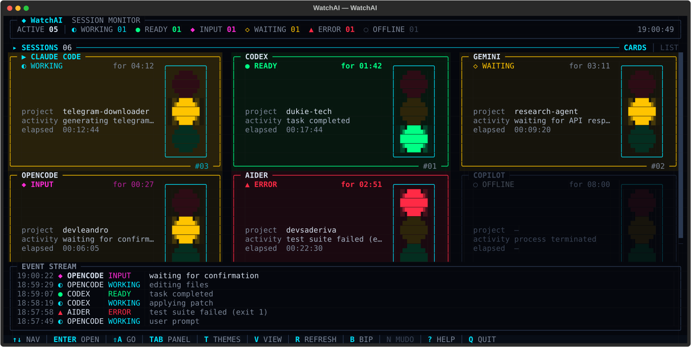
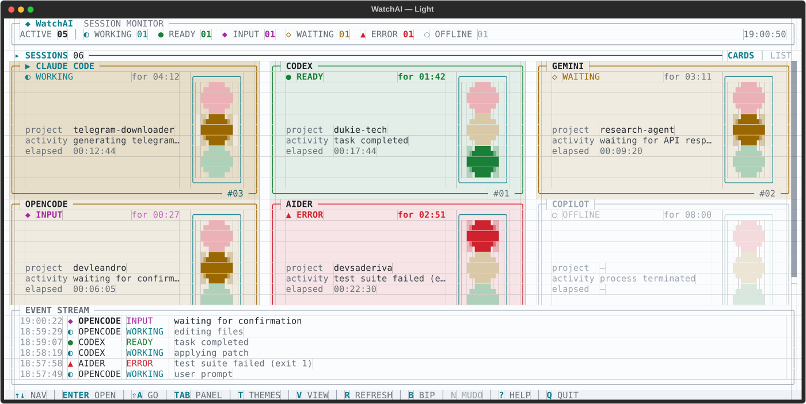
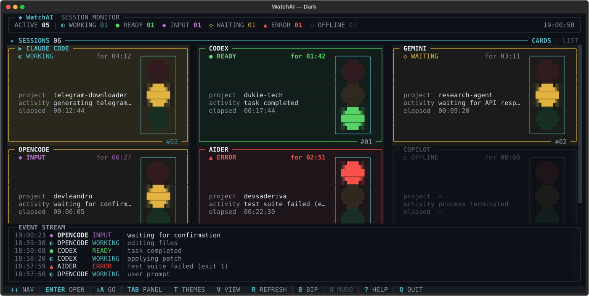
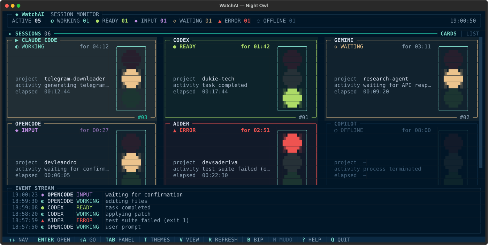
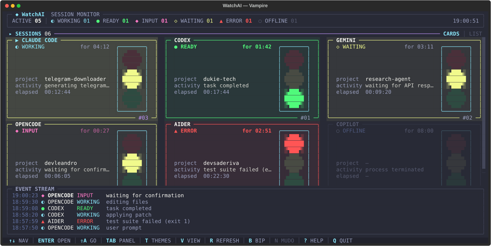
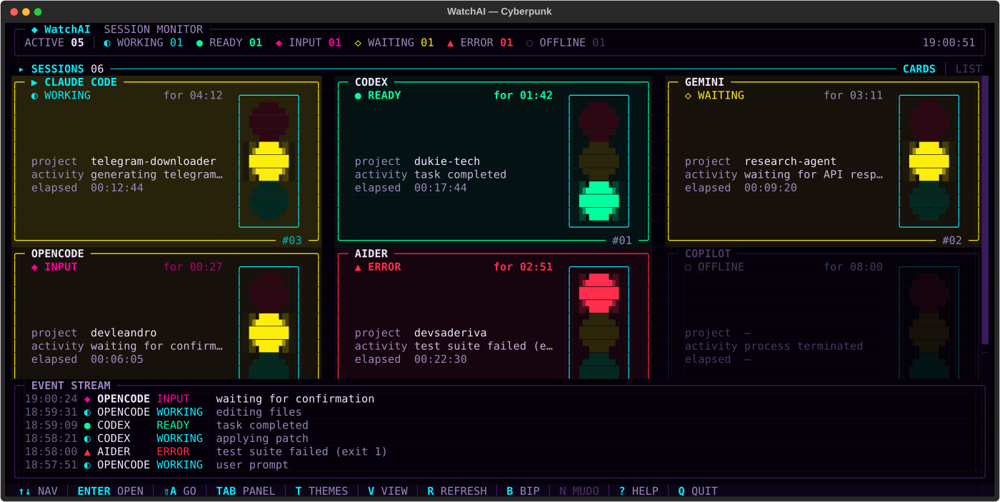
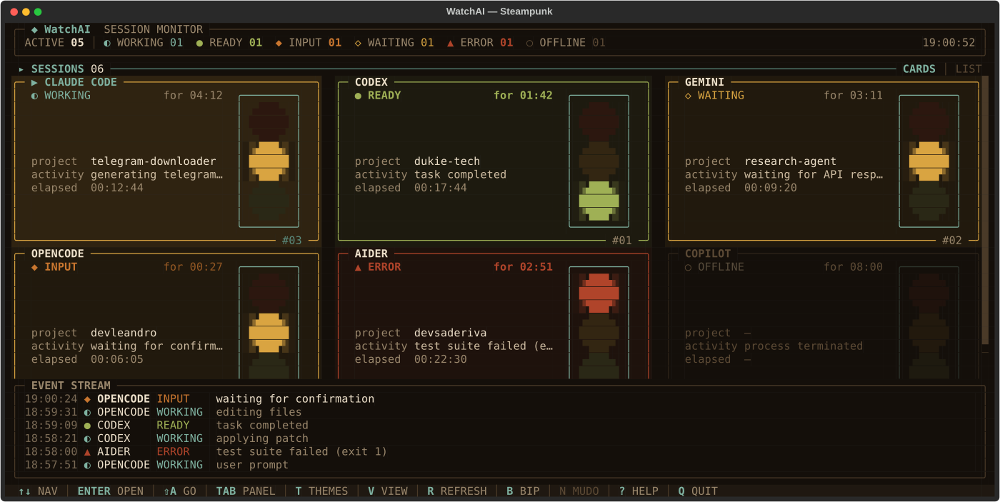
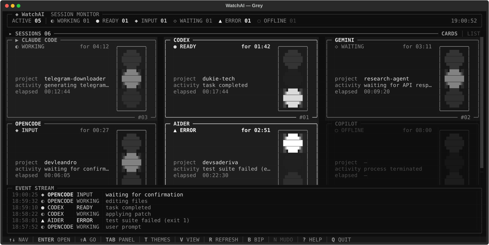

Uma tela, vários terminais
Resumo global e um card por terminal com agentes detectados. Alterne entre cards ou lista.
 WatchAI
WatchAI
Saiba, sem alternar janelas, qual assistente de IA está trabalhando, qual terminou e qual pode precisar da sua atenção.
O WatchAI detecta sessões locais usando processos e, quando disponíveis, os diários do Claude Code e do Codex. Tudo em um dashboard de terminal com cartões, semáforos e linha do tempo.
Uma interface para ler o estado das sessões de longe — no espaço onde o trabalho já acontece: o terminal.

Como funciona: a versão atual do código-fonte detecta processos locais; lê também diários de Claude Code e Codex para refinar o estado. Para outros agentes, a leitura se baseia em processos. Algumas situações, como o estado INPUT, são inferidas e podem não ser exatas. Use watchai --mock para testar com dados simulados.
Os sinais de cada terminal ficam organizados para você encontrar o que precisa de atenção.
Resumo global e um card por terminal com agentes detectados. Alterne entre cards ou lista.
Estados como WORKING, READY, INPUT, WAITING e ERROR têm cor e símbolo próprios para uma leitura rápida.
O event stream reúne eventos recentes; os detalhes de cada sessão ficam a uma tecla de distância.
Bip opcional ao entrar em READY, oito temas e layout que se adapta à largura do terminal.
WatchAI, Light, Dark, Night Owl, Vampire, Cyberpunk, Steampunk e Grey. Mude o tema com a tecla T dentro do aplicativo.








Em qualquer computador Linux, macOS ou Windows que já tenha pipx, Git e Python 3.10 ou superior, execute o primeiro comando ao lado. O pipx baixa o WatchAI, cria um ambiente isolado e disponibiliza watchai no terminal.
Também é necessário ter acesso à internet durante a instalação e um terminal com suporte a Unicode. Se watchai não aparecer depois de instalar, rode pipx ensurepath e abra um terminal novo. Até a publicação no PyPI, o pacote é obtido diretamente deste repositório.
01 COLE ESTE ÚNICO COMANDO PARA INSTALAR
pipx install git+https://github.com/LeandroDukievicz/WatchAI.git02 DEPOIS, ABRA O WATCHAI
watchaiO WatchAI já acompanha sessões locais e oferece um modo simulado para explorar a interface. A detecção ainda tem limites conhecidos, documentados no repositório.
Conhecer os limites